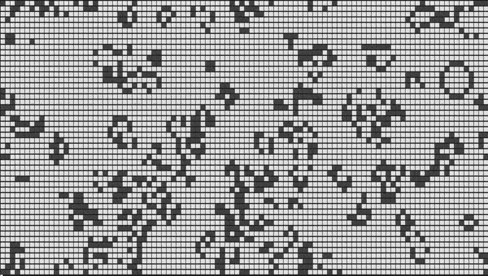

22. Жизнь. (в коде есть строки из следующих тем: "библиотеки").
Условие:
В программе задаётся поле 100х50. Половина клеток поля чёрные, половина белые. Программа должна это сгенерировать и вывести на экран.
Каждый новый ход будет новая картина, одни клетки будут становиться черными, другие белыми и экран будет изменяться.
Правило поведения клеток:
- если у живой клетки два или три живых соседа, она продолжает жить на следующем шаге,
- если у мертвой клетки три живых соседа, то она оживает,
- все остальные клетки умирают на следующем шаге.
Программа должна повторяться бесконечно. Пользователь завершает работу программы из IDE или из ОС вручную.
Пример (нужно сделать вот так:):

Код:
import random, time, copy, os
WIDTH = 100 # ширина поля
HEIGHT = 50 # высота поля
CELL_FULL = "\u2B1B" # маркер живой клетки. \u2B1B - это запись из таблицы Unicode (UTF-8).
CELL_EMPTY = "\u2B1C" # маркер мертвой (пустой) клетки
next_cells = list() # создадим список списков, по сути двумерный массив
for a in range(WIDTH): # заполним поле по ширине
column = list() # заполним поле по высоте
for b in range(HEIGHT):
if random.randint(0, 1) == 1: # первоначальное добавление живой клетки
column.append(CELL_FULL)
else: # первоначальное добавление мертвой клетки
column.append(CELL_EMPTY)
next_cells.append(column) # для каждой клетки по ширине добавляется целый ряд клеток по вертикали
# В ИТОГЕ:
# получился список списков, длина которого это ширина поля
# а вот элементы списка это одинаковые по длине списки, которые являются вертикалями поля
# произошло первоначальное рандомное заполнение области живыми клетками
while True: # запускает программу бесконечно, пока пользователь сам не прервёт её выполнение вручную
os.system("clear") # очищает экран перед каждым выводом поля
current_cells = copy.deepcopy(next_cells) # происходит создание нового списка списков из уже имеющегося путём копирования с помощью <copy>, старый список остаётся, т.е. в памяти хранятся оба списка.
for a in range(HEIGHT): # этот цикл выведет поле на экран
for b in range(WIDTH):
print(current_cells[b][a], end="") # вывод клетки по горизонтали
print() # отделим кадры с меняющимися полями
for a in range(WIDTH): # этот цикл получит координаты соседних клеток
for b in range(HEIGHT):
left = (a - 1) % WIDTH # хитрый трюк арифметики (клетка всегда будет между границами поля, если приблизится к границе, то может появиться с другой стороны поля)
right = (a + 1) % WIDTH # ...
above = (b - 1) % HEIGHT
below = (b + 1) % HEIGHT
neighbors = 0 # теперь начинаем считать соседей
if current_cells[left][above] == "\u2B1B": # считает соседа слева сверху
neighbors += 1
if current_cells[a][above] == "\u2B1B": # считает соседа сверху
neighbors += 1
if current_cells[right][above] == "\u2B1B": # считает соседа справа сверху
neighbors += 1
if current_cells[left][b] == "\u2B1B": # слева
neighbors += 1
if current_cells[right][b] == "\u2B1B": # справа
neighbors += 1
if current_cells[left][below] == "\u2B1B": # слева снизу
neighbors += 1
if current_cells[a][below] == "\u2B1B": # снизу
neighbors += 1
if current_cells[right][below] == "\u2B1B": # справа снизу
neighbors += 1
if current_cells[a][b] == "\u2B1B" and (neighbors == 2 or neighbors ==3): # условие состояния клетки
next_cells[a][b] = "\u2B1B"
elif current_cells[a][b] == "\u2B1C" and neighbors == 3: # ...
next_cells[a][b] = "\u2B1B"
else:
next_cells[a][b] = "\u2B1C"
time.sleep(1) # заморозка на 1 сек.